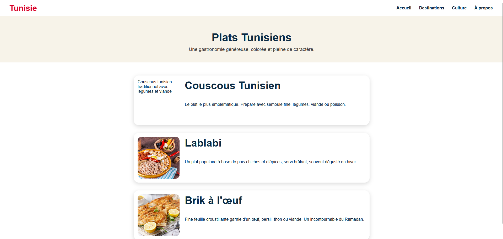
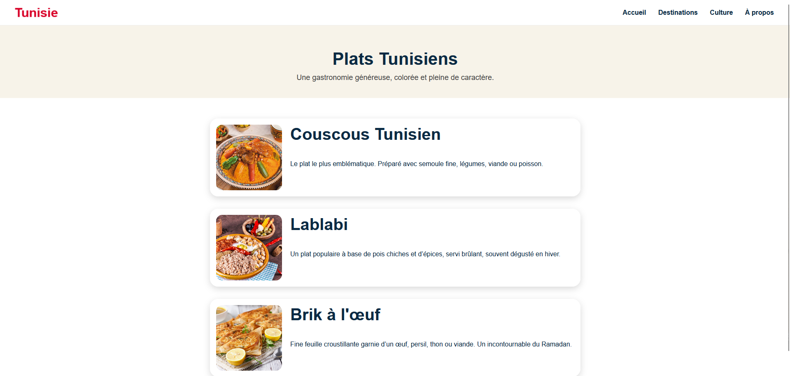
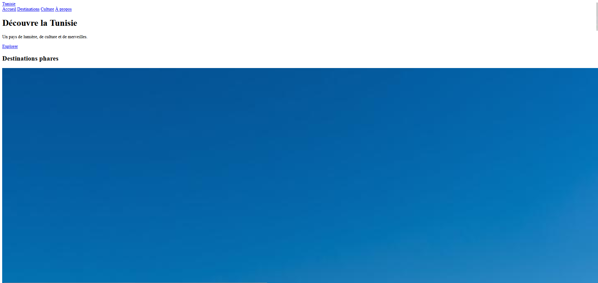

SAÉ 1.04
Se présenter sur Internet
Se présenter sur Internet
Dans le cadre de la SAÉ 1.04 « Se présenter sur Internet », j’ai travaillé sur la création et l’organisation d’un site web en HTML et CSS.
L’objectif était de comprendre la structure d’une page web, d’utiliser les feuilles de style CSS et de créer une interface moderne et responsive.
Ma contribution personnelle consistait à concevoir les pages HTML du portfolio, organiser les ressources du site et corriger les erreurs liées au chargement des fichiers CSS et des images.
Ces apprentissages critiques ont été mobilisés durant cette SAE à travers la création du site web, l’organisation des ressources HTML/CSS et la résolution des problèmes liés au chargement des fichiers.
Durant cette SAE, j’ai créé plusieurs pages web afin de présenter différents projets et contenus liés au portfolio.
J’ai également travaillé sur :
Lors du développement du site web, certaines ressources comme les images ou les fichiers CSS ne s’affichaient plus correctement dans les pages.
Après plusieurs vérifications, j’ai constaté que certains chemins d’accès utilisés dans le HTML étaient incorrects.

Une erreur dans le nom du dossier ou du fichier empêchait le chargement des ressources sur la page web.
Afin de corriger ce problème, j’ai modifié les chemins d’accès des images et fichiers CSS dans les différentes pages HTML.
Figure 1 — Vérification et correction des chemins d’accès.

Après les corrections, toutes les ressources se chargeaient correctement et le site retrouvait son apparence normale.
Figure 2 — Affichage correct du site après correction.

Après analyse du code HTML, j’ai constaté qu’une erreur était présente dans le lien vers la feuille de style CSS.
Le fichier était appelé avec un mauvais nom dans la balise :
Alors que le fichier du projet s’appelait :
Le navigateur ne parvenait donc pas à charger la feuille de style du projet.
Pour corriger cette erreur, j’ai modifié le lien dans le fichier HTML afin d’utiliser le bon nom de fichier :
Après cette correction, l’ensemble des styles CSS a été correctement appliqué à la page web.
Figure 2 — Affichage correct de la page après chargement du CSS.
Cette SAE m’a permis de découvrir différentes situations liées au développement et à l’organisation d’un site web.
À travers ces manipulations, j’ai appris à analyser un problème, identifier son origine et appliquer une solution adaptée.
Ce travail m’a également permis de mieux comprendre l’utilisation du HTML et du CSS, l’organisation des fichiers ainsi que l’importance des chemins d’accès dans un projet web.
Cette SAE m’a également permis de développer ma méthodologie dans la création d’un site web en apprenant à mieux organiser les fichiers et vérifier les chemins d’accès utilisés dans les pages HTML.
Si je devais refaire ce projet, j’améliorerais davantage l’optimisation du code et l’organisation globale des ressources afin de faciliter la maintenance du site.